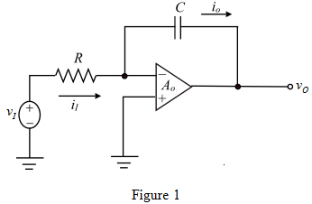

The open loop gain of the op-amp is  .
.
Calculate the current through the source.
Substitute  for in the equation.
for in the equation.
Draw the non-ideal op-amp integrator circuit.

The open loop gain of the op-amp is .
Calculate the current through the source.
Substitute for in the equation.
Apply Kirchhoff’s voltage law.
Substitute for and for in the equation.
The transfer function of the integrator is , which represents a low-pass STC transfer function.
The transfer function of the non-ideal Miller integrator is,
Determine the pole frequency of the transfer function by substitute  for s in the transfer function.
for s in the transfer function.
Therefore, the pole frequency of the transfer function is .
Therefore, an ideal Miller integrator has a pole frequency at the origin whereas the pole frequency of a non-ideal integrator is at , which makes the integrator more stable.
The magnitude of the transfer function is,
The angular frequency is,
Substitute for  in the magnitude of the transfer function.
in the magnitude of the transfer function.
Substitute  for in the equation.
for in the equation.
Therefore, the output voltage of an ideal Miller integrator is .
The magnitude of the transfer function of non-ideal integrator circuit is,
Substitute for  in the magnitude of the transfer function.
in the magnitude of the transfer function.
Substitute 1000 for  in the equation.
in the equation.
Substitute  for in the equation.
for in the equation.
Thus, the output voltage of an non-ideal Miller integrator is .